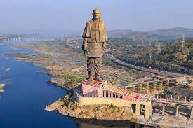
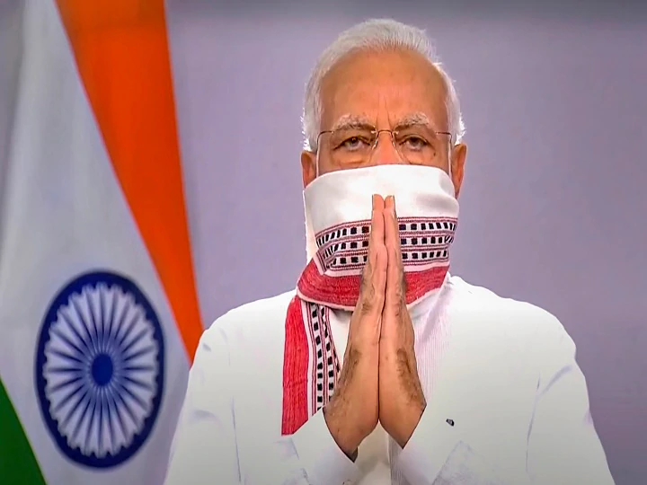

- Modi's Acievements
- Gujarat CM 2002
- Gujarat Cm 2007
- Gujarat CM 2012
- INDIA PM 2014
- INDIA PM 2019
| GUJARAT 2002 | GUJARAT 2007 | GUJARAT 2012 | INDIA 2014 | INDIA 2019 |
|---|---|---|---|---|
| 108 | 94 | 108 | 312 | 351 |
| 74 | 88 | 74 | 228 | 189 |
| 182 | 182 | 182 | 543 | 543 |
MAJOR PORTPHOLIOS
GUJARAT RIOTS 2002
On 27 February 2002, a train with several hundred passengers burned near Godhra, killing approximately 60 people.[h] The train carried a large number of Hindu pilgrims returning from Ayodhya after a religious ceremony at the site of the demolished Babri Masjid.[93][94] In making a public statement after the incident, Modi declared it a terrorist attack planned and orchestrated by local Muslims.[10][93][95] The next day, the Vishwa Hindu Parishad called for a bandh across the state.[96][97] Riots began during the bandh, and anti-Muslim violence spread through Gujarat.[93][96][97] The government's decision to move the bodies of the train victims from Godhra to Ahmedabad further inflamed the violence.[93][98] The state government stated later that 790 Muslims and 254 Hindus were killed.[99] Independent sources put the death toll at over 2000.[93][100] Approximately 150,000 people were driven to refugee camps.[101] Numerous women and children were among the victims; the violence included mass rapes and mutilations of women.[9][102]
The government of Gujarat itself is generally considered by scholars to have been complicit in the riots,[8][9][10] and has otherwise received heavy criticism for its handling of the situation.
[103] Several scholars have described the violence as a pogrom, while others have called it an example of state terrorism.[104][105][106] Summarising academic views on the subject, Martha Nussbaum said: "There is by now a broad consensus that the Gujarat violence was a form of ethnic cleansing, that in many ways it was premeditated, and that it was carried out with the complicity of the state government and officers of the law."[9] The Modi government imposed a curfew in 26 major cities, issued shoot-at-sight orders and called for the army to patrol the streets, but was unable to prevent the violence from escalating.[96][97] The president of the state unit of the BJP expressed support for the bandh, despite such actions being illegal at the time.[10] State officials later prevented riot victims from leaving the refugee camps, and the camps were often unable to meet the needs of those living there.[107] Muslim victims of the riots were subject to further discrimination when the state government announced that compensation for Muslim victims would be half of that offered to Hindus, although this decision was later reversed after the issue was taken to court.[108] During the riots, police officers often did not intervene in situations where they were able.[9][95][109]
Modi's personal involvement in the 2002 events has continued to be debated. During the riots, Modi said that "What is happening is a chain of action and reaction."[9] Later in 2002, Modi said the way in which he had handled the media was his only regret regarding the episode.[110] In March 2008, the Supreme Court reopened several cases related to the 2002 riots, including that of the Gulbarg Society massacre, and established a Special Investigation Team (SIT) to look into the issue.[103][111][112] In response to a petition from Zakia Jafri (widow of Ehsan Jafri, who was killed in the Gulbarg Society massacre), in April 2009 the court also asked the SIT to investigate the issue of Modi's complicity in the killings.[111] The SIT questioned Modi in March 2010; in May, it presented to the court a report finding no evidence against him.[111][113] In July 2011, the court-appointed amicus curiae Raju Ramachandran submitted his final report to the court. Contrary to the SIT's position, he said that Modi could be prosecuted based on the available evidence.[114][115] The Supreme Court gave the matter to the magistrate's court. The SIT examined Ramachandran's report, and in March 2012 submitted its final report, asking for the case to be closed. Zakia Jafri filed a protest petition in response. In December 2013 the magistrate's court rejected the protest petition, accepting the SIT's finding that there was no evidence against the chief minister.
The information of the GUJARAT RIOTS OF 2002 can be "viewed here"!
DEVLOPMENTS PROJECTS GUJARAT
As Chief Minister, Modi favoured privatisation and small government, which was at odds with the philosophy of the RSS, usually described as anti-privatisation and anti-globalisation. His policies during his second term have been credited with reducing corruption in the state.  He established financial and technology parks in Gujarat and during the 2007 Vibrant Gujarat summit, real-estate investment deals worth ₹6.6 trillion were signed.[86] The governments led by Patel and Modi supported NGOs and communities in the creation of groundwater-conservation projects. By December 2008, 500,000 structures had been built, of which 113,738 were check dams, which helped recharge the aquifers beneath them.[152] Sixty of the 112 tehsils which had depleted the water table in 2004 had regained their normal groundwater levels by 2010.[153] As a result, the state's production of genetically modified cotton increased to become the largest in India.[152] The boom in cotton production and its semi-arid land use[154] led to Gujarat's agricultural sector growing at an average rate of 9.6 percent from 2001 to 2007.[155] Public irrigation measures in central and southern Gujarat, such as the Sardar Sarovar Dam, were less successful. The Sardar Sarovar project only irrigated 4–6% of the area intended.[152] Nonetheless, from 2001 to 2010 Gujarat recorded an agricultural growth rate of 10.97 percent – the highest of any state.[154] However, sociologists have pointed out that the growth rate under the 1992–97 INC government was 12.9 percent.[156] In 2008 Modi offered land in Gujarat to Tata Motors to set up a plant manufacturing the Nano after a popular agitation had forced the company to move out of West Bengal. Several other companies followed the Tata to Gujarat.[157] The Modi government finished the process of bringing electricity to every village in Gujarat that its predecessor had almost completed.[156] Modi significantly changed the state's system of power distribution, greatly impacting farmers. Gujarat expanded the Jyotigram Yojana scheme, in which agricultural electricity was separated from other rural electricity; the agricultural electricity was rationed to fit scheduled irrigation demands, reducing its cost. Although early protests by farmers ended when those who benefited found that their electricity supply had stabilised,[152] according to an assessment study corporations and large farmers benefited from the policy at the expense of small farmers and labourers.[158]
CORONA AND MODI
MODI was very supportive to the people of INDIA and energetic to curve the first wave of covid19 in INDIA, which resulted in the maximum cases going up to 97900 and subsequently coming down after that, this was the great success to stop the covid surge in the nos. less than 1 lakh in a country whose population is more than 135 crores. but the real test of modi came in the second wave when country was sent to cross it's peak during the first wave, but what the people of INDIA saw was a very different approach of NARENDRA MODI towards the second wave.  When the country was going to touch 2 lakh cases per day prime minister NARENDRA MODI was busy doing election rallies in west bengal, which was subsequently the toughest battle for the BJP-led and NDA to win. People of INDIA were very sad with the approach of MODI towards the second wave, which gave an advantage to MAMATA DIDI over the BJP, resulting in TMC getting 3-4 seats more as compared to the previous vidhan sabha elections. BJP though got seats as compared to their previous performance but the seats they got were the seats of congress and CPI, which resulted in BJP going up from 2 seats to 87 seats and CPI+ INC coming down from 87 to 0 seats. Starting of the month of may were very challenging for people of INDIA with covid cases touching 4 lakhs and their supreme leader being unresponsive. People were starving to get a hospital bed and medical oxygen for their dear once.
THE COVID NOS. OF INDIA CAN BE SEEN BY
clicking here!
THE COVID PANDEMIC CONDITION IN INDIA CAN BE SEEN THROUGH VIDEO
The country fought the first wave of the Covid-19 pandemic “courageously” and it would be “victorious” in its ongoing fight against the virus during the second wave, PM Narendra Modi said on Sunday. “In the form of the corona pandemic, we are being continuously put to test. This is a crisis that has plagued the whole world, so many people have lost their loved ones. Even big countries were not spared from its devastation,” Modi said in his monthly radio programme ‘Mann ki Baat’. He emphasised that no matter how big the challenge, the country’s ‘vijay sankalp’ (resolve to be victorious) had always been equal to the challenge. “Our collective strength and our spirit of service has always rescued the country from the midst of every storm,” he said. During the programme, he spoke to three people involved with transporting oxygen cylinders and containers through rail, road and airways, and listened to their experience and challenges during the recent crisis when many parts of the country faced severe shortage of medical-grade oxygen. He also pointed to the government completing seven years in office and highlighted signature initiatives, including power connections to all households and the Jal Jeevan mission to provide tap water to all rural homes. “In the midst of this pandemic, India is moving forward with the resolve of service and cooperation,” he added. Modi pointed to the scheme to provide tap water connection to every rural household in the country by 2024 under Jal Jeevan Mission and said it had made strong progress without any break during the pandemic. “In the seven decades after independence, only 3.5 crore rural homes of our country had water connections. However, in the last 21 months, 4.5 crore houses have been given clean water connections. Of these, 15 months were of the corona period,” he added. The PM also noted the contribution of farmers and the agriculture sector during the pandemic. “The agricultural sector protected itself from this attack to a great extent. Not only did it keep itself safe, but the sector also progressed, moving forward. Farmers produced record output and this time, the country went on to procure record amounts of crops. This time, in many places, farmers have got more than the minimum support price for mustard,” he said. Noting that India was able to provide support to every citizen due to record foodgrain production, he said, “Today, 800 million underprivileged citizens are being provided free ration in this hour of crisis. So, no such day ever occurs in a needy home when the stove is not lit.”
TWEETS OF CELEBRITIES RELATED TO LOCKDOWN IN INDIA IN MARCH 2020
At 5 PM on 22nd March 2020, the day of the Janata Curfew, I have a special request. Will you all help? #IndiaFightsCorona pic.twitter.com/Qi63adPUJh
— Narendra Modi (@narendramodi) March 19, 2020
Simple things are often the hardest to do, because they require consistent discipline & determination.
— Sachin Tendulkar (@sachin_rt) March 24, 2020
Hon‘ble PM @narendramodi ji has asked us to #StayHomeStaySafe for 21 days. This simple task can save millions of lives.
Let’s all unite in this war against #COVID19.
Please stay at home it’s the only way. This lockdown is for all of us and our safety. #IndiaFightsCorona #StayHomeStaySafe @narendramodi @PMOIndia https://t.co/7H3VcC0Zee
— Anil Kapoor (@AnilKapoor) March 24, 2020
I support the PM’s decision to implement a 21 day lockdown across India. Rajasthan was among the first states to implement a lockdown. We will ensure that public is not put to inconvenience during this period & essentials are supplied.
— Sachin Pilot (@SachinPilot) March 24, 2020
United in this fight against #COVID19
T 3480 -
— Amitabh Bachchan (@SrBachchan) March 24, 2020
"हाथ हैं जोड़ते विनम्रता से आज हम ,
सुनें आदेश प्रधान का , सदा तुम और हम ;
ये बंदिश जो लगी है , जीवदायी बनेगी ,
21 दिनों का संकल्प निश्चित Corona दफ़नाएगी " !!!
~ अमिताभ बच्चन pic.twitter.com/Hq35etxSz0